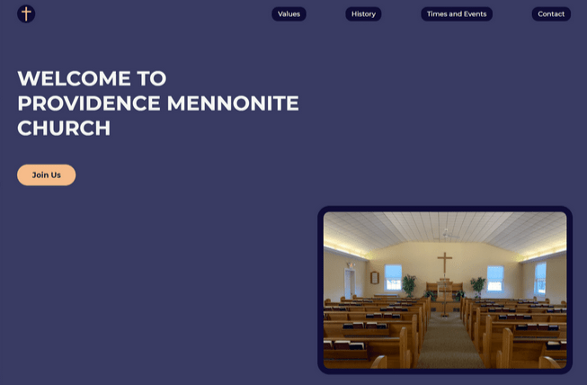

Church Website

Technologies Used


Description
A local church origazation which I do attend did not have a website for itself. I saw this as an opportunity to create something for them. I also used this project as a way to expermient with some new ideas. Instead of using CSS I used SCSS and I found nice icons on undraw and animated parts of the SVG images. I also implemented some site animations as well to learn about them more. This is the second version of this site and as I learn more I can make changes that better improve the site. This church wesbite was built using HTML, SCSS, JavaScript, and PHP.